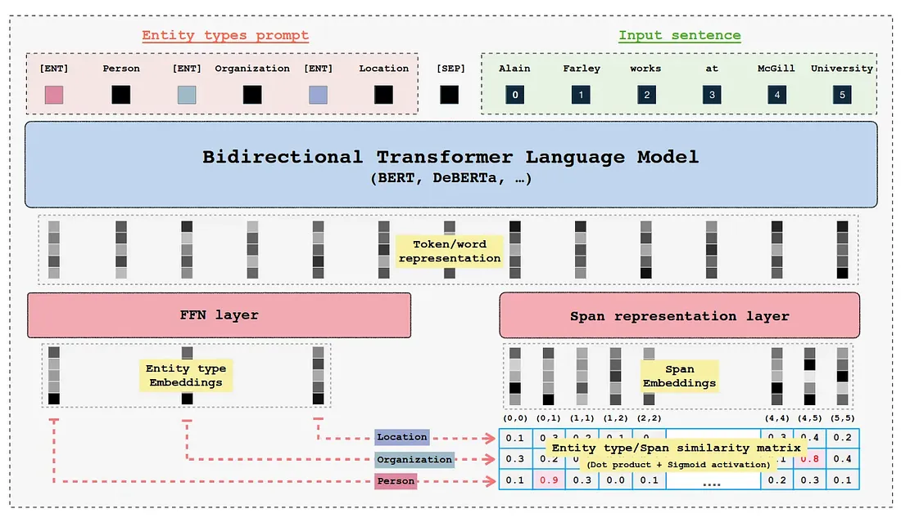

Architectures¶
GLiNER (Generalist and Lightweight Model for Named Entity Recognition) is a Named Entity Recognition (NER) model capable of identifying any entity type using a bidirectional transformer encoder (BERT-like). It provides a practical alternative to traditional NER models, which are limited to predefined entities, and Large Language Models (LLMs) that, despite their flexibility, are costly and large for resource-constrained scenarios.

Overview¶
GLiNER addresses the critical limitation of traditional (BERT-like encoder-only) NER models, which entails that such models can only process a pre-defined set of discrete entities and lack zero-shot generalization capabilities outside the entity types of their training sets. Furthermore, such models become an even less attractive choice given the widespread proliferation of decoder-only LLMs. This is a byproduct of LLMs’ strong zero-shot performance mainly due to in-context learning and potential for further performance gains in few-shot regime.
Despite the above-mentioned limitations of encoder-only models, they can still offer significant cost and computation saving given their small-sizes, ability to produce more enriched contextualized token, word, and sequence representations thanks to bi-directional attention. Thereby, GLiNER equips them with zero-shot capabilities and makes them a competitive alternative to decoder-only LLMs more importantly in resource-constrained production settings.
In this section we would like to break-down the GLiNER architecture into its atomic pieces. Furthermore, there has been significant follow-up work on the original GLiNER architecture allowing the approach to extrapolate beyond NER to Extractive Question-answering, Open Information Extraction, Extractive Summarisation, Relation Extraction, and Open NER proposed in the GLiNER paper. Lastly, another facet of GLiNER that was most recently was to optimise its computational performance by de-coupling the entity-type and input sequence encoding processing into two different model. Hence, allowing for the possibility of pre-computing entity-type representations just once saving unnecessary computation. This speeds-up performance when the num_tokens(entity_types) > num_tokens(input_sequence) condition is present.
GLiNER Architecture Variants¶
The GLiNER framework now supports multiple architecture variants, each optimized for different use cases:
Architecture |
Encoding Strategy |
Prediction Level |
Key Features |
Best For |
|---|---|---|---|---|
UniEncoderSpan |
Single encoder for text + labels |
Span-level |
Original GLiNER, efficient, good zero-shot |
General NER, up to ~30 entity types |
UniEncoderToken |
Single encoder for text + labels |
Token-level (BIO tagging) |
Better for long entities, multi-task capable |
Long-form extraction, summarization |
BiEncoderSpan |
Separate encoders for text & labels |
Span-level |
Pre-compute label embeddings, handles 100+ entity types |
Many entity types, production deployment |
BiEncoderToken |
Separate encoders for text & labels |
Token-level |
Combines bi-encoder efficiency with token-level prediction |
Long entities with many types |
UniEncoderSpanDecoder |
Single encoder + generative decoder |
Span-level with generation |
Generates entity labels, open vocabulary |
Open-domain NER, label discovery |
UniEncoderTokenDecoder |
Single encoder + generative decoder |
Token-level with generation |
Token-level detection + label generation |
Long entities with open vocabulary |
UniEncoderSpanRelex |
Single encoder + relation layers |
Span-level + relations |
Joint entity and relation extraction |
Knowledge graph construction, IE |
UniEncoderTokenRelex |
Single encoder + relation layers |
Token-level + relations |
Token-level entities with relation extraction |
Long entities with relations |
The framework automatically selects the appropriate architecture based on your model configuration, providing a unified API across all variants.
Vanilla GLiNER (UniEncoderSpan)¶

Training Approach¶
GLiNER primarily employs BERT-like bi-direction encoder-only pre-trained language models. Furthermore, both the entity labels and input sequence are concatenated and then passed through the encoder model. The standard [SEP] special token is used to indicate the boundary between entity labels and input sequence. Whereby, to represent boundary for each entity-type a special token [ENT] is placed before each entity type moreover, the embedding of this token is initialised randomly at the beginning of training.

After the forward-pass of the encoder model the [ENT] token representations represent each of their preceding entity label and are passed through a two-layer feedforward network for further refinement. The resulting entity representation for an entity type t can be expressed as:


Similarly, the input sequence tokens are combined to form spans for instance (assuming no word is split into subword tokens):
input_sequence = "my name is john"
tokens = ["my", "name", "is", "john"]
spans = [
["my"],
["name"],
["is"],
["john"],
["my", "name"],
["name is"],
["is", "john"],
...
]
In case if the word is split into more than one tokens the first token and the last token are used to mark span boundaries and their representations are further used. Finally the span representations are computed, more for a span starting at index i and ending at j, the span representation for span Sij can be computed as:


The resulting span representation would be D-dimensional vector:
The above process is applied to all spans on their token representations to compute unified span representations. To keep the computational overhead in-check the maximum span length is set to 12.
Lastly, to compute whether a given span belongs to a entity label the sigmoid activation is applied on the dot-production of entity label and span representation:

To train the model on the sigmoid activations for each span and entity label interaction score Binary Cross Entropy loss is employed to classify between positive and negative instance of span and entity label interaction scores.
Span Decoding¶
To infer spans whether a give interaction score represents a particular entity type firstly, non-entity spans are removed by thresholding on interaction scores:
Furthermore, two decoding strategies are proposed:
Flat NER: Highest scoring non-overlapping spans are selected exhaustively.
Nested NER: Similar to Flat NER, but allow for overlapping spans except partial overlaps.
GLiNER Multi-task (UniEncoderToken)¶
As discussed in the overview, the GLiNER Multi-task work extends the original GLiNER architecture to new tasks including Extractive Question-answering, Open Information Extraction, Extractive Summarisation, Relation Extraction, and Open NER. Furthermore, it also explore synthetic label generation using Llama 3 8B LLM for the aforementioned tasks. Lastly, it also evaluates model’s self-learning capability where the pre-trained GLiNER Multi-task model initially generates weak labels for the task and then those labels are used to fine-tune the model resulting in significant gains in model generalisation on the downstream dataset.
Architecture & Training Approach¶
The GLiNER multi-task model uses tokens instead of spans for input sequence processing. This allows models to perform well on long-form prediction generation tasks such as summarisation and long entity extraction etc. Since a given extractive summarisation can potentially be multiple sentences long thereby, spans could be limiting factor here.
During the forward pass of the model the the input sequence and labels are concatenated employing the identical mechanism to the original work. After the encoding the input sequence and labels, the input sequence’s token embeddings are passed through a bi-directional LSTM, which speeds up and stabilises the training against negative tokenisation and positional encoding artefacts. Finally, both label and input sequence’s token representations are refined further by passing via feedforward network which projects the token representations to higher dimensional space (2x times larger than original hidden dimension). The forward pass more formally look as follows:
Let T be the token representations of input sequence and L be the token representations of labels. Where M is the input sequence length and C is the number of unique labels. T', T'' represent refined input sequence and label representations in high-dimensional latent space.
Both T' and L' are element-wise multiplied across the axis D with T' and resulting in M×C×2×D dimensional matrices which then are re-permuted as:

To better capture interactions between input sequence and labels element-wise dot product between refined token representations is concatenated to whilst also concatenating T''' and L''' together across the last dimension D. Importantly, first dimension is kept as it is whereby the last dimension is element-wise multiplied.

Afterwards the concatenated representations are passed through a FFN. To generate token-level classification scores for each class generating three logits corresponding to start, end, intermediate. Let S be the score matrix then:

Decoding Spans¶
To determine whether a given token is positively interacting with a label scores, Flat NER decoding approach is used with a difference that scores are averaged for entire span:

Self-training¶
The pre-trained model is used to generated initial weak labels for domain NER benchmark and then model is fine-tuned on the weak labels by employing label smoothing which prevents the model to become over-confident on ground truth labels. This is beneficial when annotated labels are not GOLD standard.
Essentially label smoothing acts as regularisation as it steals probability mass from correct label and distributes that to other classes hence, avoiding overfitting. For binary classification tasks the loss function with label smoothing looks like:

Here alpha is the smoothing parameter.
GLiNER Bi-encoder (BiEncoderSpan & BiEncoderToken)¶

Although the original GLiNER architecture provides an powerful alternative to extract entities in zero-shot regimes. However, the model still have performance bottlenecks and limitations:
Entities representations are conditioned on their order due to positional encoding layer of transformer.
The model’s performance degrades when number of entity labels exceed 30.
Joint entity label and input sequence representation create significant overhead specially when the number of entity tokens are greater than input sequence tokens. As most of entity labels won’t be present in the given smaller input sequence hence, forward pass (bi-directional attention, FFN etc.) on those un-matched entity types wastes the compute.
Architecture & Training Approach¶
To address the above-mentioned shortcomings of the original architecture, the authors of GLiNER multi-task also propose this extension of GLiNER, albeit as a completely separate work from the multi-task paper. Two architectures are proposed, namely:
Bi-encoder: The key idea behind their approach is to de-couple the encoding process of entity labels and input sequence. This allows for pre-computation of entity types just once resulting in more efficient acquisition of entity type representation. The authors employ pre-trained sentence transformers as entity type encoder and the original BERT-like model for encoding input sequence (identical to the original work).
Poly-encoder: This encoder uses the representations produced by entity label and input sequence encoders and fuses them together to capture the interactions between them to capture additional signal similar to the original BiLM.

The subsequent steps after encoding, in order to obtain coarser label and span embeddings remain unchanged when compared to the original work.
Span vs Token-Level Bi-encoders¶
The bi-encoder architecture comes in two variants:
BiEncoderSpan: Uses span-level predictions (like vanilla GLiNER), best for standard NER tasks with discrete entity mentions
BiEncoderToken: Uses token-level predictions (like GLiNER Multi-task), better suited for long-form entities and when combined with the efficiency of pre-computed label embeddings
Both variants benefit from the ability to pre-compute and cache label embeddings, making them particularly efficient when:
Working with a large, fixed set of entity types (50-200+ types)
Processing many documents with the same entity schema
Deploying in production where latency matters
Advantages of de-coupled Encoders:¶
Recognise large number of entities significantly beyond original maximum 30 entities without significant performance degradation
Faster inference and robustness on out of distribution data, hence, solidifying zero-shot performance.
Pre-compute label embeddings once and reuse across batches
Training Approach¶
The de-coupled GLiNER model uses pre-trained DeBERTa (input sequence encoder) and BGE (entity type encoder) models as encoders which are trained in two stages.
GLiNER bi-encoder is jointly pre-trained on one million NER samples in a supervised fashion. This stage focuses mainly on aligning entity label representations with span representations.
At stage two, the pre-trained bi-encoder is further fine-tuned on 35k higher quality input sequence and entity types. This stages enhances the model performance on the NER task itself by refining the fidelity of representations.

Training Considerations¶
The batch size can greatly influence the model generalisability. As, larger batch size leads to more stable training and less noisy gradients. However, as it pertains to span to entity label interactions, the larger the batch size, the more negative interactions would be produced, leading to model which has higher entropy in its decision boundary. Here, we mitigate this effect by using a weighted loss more formally known as focal loss.
The key intuition behind focal loss is to mitigate class imbalance which is highly likely for larger batches. Focal loss can more formally be defined as:

pt refers to probability of target class
α is to control the influence positive and negative samples within batch to reduce effect of class imbalance
γ further reduces the loss values on correctly classified samples (i.e. easy samples) so that model can focus on miss-classified (hard samples) hence further reducing effect of majority negative examples
GLiNER with Generative Decoder (UniEncoderSpanDecoder)¶
The UniEncoderSpanDecoder architecture extends the span-based GLiNER with a generative decoder component, enabling the model to generate entity type labels rather than just classify them. This architecture is particularly useful for open-domain NER where entity types are not known in advance or need to be discovered dynamically.
Architecture Overview¶
The architecture combines:
Span Encoder: Standard GLiNER span-based encoder for detecting entity boundaries
Generative Decoder: GPT-2 or similar decoder that generates entity type labels for detected spans

Key Features¶
Dual-Mode Operation:
Prompt Mode: The decoder generates labels that completely replace the predefined entity types
Span Mode: The decoder generates labels as additional information alongside predicted entity types
Label Generation Process:
Entity spans are first detected using standard GLiNER span classification
For each detected span, contextualized representations are fed to the decoder
The decoder autoregressively generates natural language labels for the entity
Training Objective:
Joint training with two loss components:
Span classification loss (standard binary cross-entropy)
Decoder generation loss (cross-entropy on token predictions)
Loss coefficients can be adjusted via
span_loss_coefanddecoder_loss_coef
Use Cases¶
Open-vocabulary NER: Discover entity types not seen during training
Fine-grained typing: Generate more specific entity types than predefined categories
Zero-shot label generation: Let the model propose appropriate labels based on context
Label refinement: Generate detailed entity descriptions beyond simple type names
Example Usage¶
from gliner import GLiNER
# Load a model with generative decoder
model = GLiNER.from_pretrained("knowledgator/gliner-decoder-small-v1.0")
text = "Apple Inc. was founded by Steve Jobs in Cupertino, California."
# The model can generate entity labels based on context
entities = model.inference(
[text],
labels=["entity"], # Generic prompt
gen_constraints=["company", "person", "location"], # Optional: constrain generation
num_gen_sequences=1
)
# Each entity will have both predicted type and generated label
for entity in entities[0]:
print(f"{entity['text']} => {entity['label']}")
if 'generated_labels' in entity:
print(f" Generated: {entity['generated_labels']}")
GLiNER Token-Level with Generative Decoder (UniEncoderTokenDecoder)¶
The UniEncoderTokenDecoder architecture combines token-level BIO tagging with a generative decoder, offering the best of both worlds: the ability to handle long entity spans (from token-level prediction) and open-vocabulary entity typing (from the generative decoder).
Architecture Overview¶
The architecture extends UniEncoderToken with decoder capabilities:
Token Encoder: Standard GLiNER token-based encoder with BIO tagging for entity boundary detection
Span Representation Layer: Converts detected token sequences into span representations
Generative Decoder: GPT-2 or similar decoder that generates entity type labels for detected spans
Key Differences from UniEncoderSpanDecoder¶
Aspect |
UniEncoderSpanDecoder |
UniEncoderTokenDecoder |
|---|---|---|
Entity Detection |
Span enumeration (max width 12) |
Token-level BIO tagging |
Long Entities |
Limited by max span width |
No length limitation |
Computation |
O(n × max_width) spans |
O(n) tokens |
Best For |
Standard NER entities |
Long-form extraction + label generation |
Architecture Details¶
Token-Level Detection:
Uses the Scorer module to compute token-label compatibility scores
Produces three logits per token per class: start, inside, end (BIO-style)
Entities are extracted by finding contiguous sequences of positive predictions
Span Representation:
Detected token sequences are converted to span representations
Optional
represent_spansmode uses a dedicated SpanRepLayer for richer representationsSpan representations are then fed to the decoder for label generation
Training Objective:
Multi-component loss:
Token classification loss (
token_loss_coef)Span classification loss (
span_loss_coef)Decoder generation loss (
decoder_loss_coef)
Configuration¶
from gliner import GLiNERConfig
config = GLiNERConfig(
model_name="microsoft/deberta-v3-small",
span_mode="token_level",
labels_decoder="gpt2", # Enables decoder
decoder_mode="span", # or "prompt"
token_loss_coef=1.0,
span_loss_coef=1.0,
decoder_loss_coef=0.5,
represent_spans=True, # Use SpanRepLayer for span representations
)
Use Cases¶
Long entity extraction with open vocabulary: Extract multi-sentence entities while generating appropriate labels
Extractive summarization with typing: Identify summary-worthy spans and label their semantic type
Document-level entity typing: Handle entities that span multiple clauses or sentences
Flexible entity annotation: Combine precise boundary detection with descriptive type generation
Example Usage¶
from gliner import GLiNER
# Load a token-level decoder model
model = GLiNER.from_pretrained("knowledgator/gliner-token-decoder-v1.0")
text = """The Paris Agreement, adopted in December 2015 at the 21st Conference
of the Parties to the United Nations Framework Convention on Climate Change,
represents a landmark international accord on climate action."""
# Extract long entities with generated labels
entities = model.inference(
[text],
labels=["entity"],
gen_constraints=["agreement", "organization", "event", "topic"],
num_gen_sequences=1
)
for entity in entities[0]:
print(f"Entity: {entity['text'][:50]}...")
print(f" Label: {entity['label']}")
if 'generated_labels' in entity:
print(f" Generated: {entity['generated_labels']}")
GLiNER for Relation Extraction (UniEncoderSpanRelex)¶
The UniEncoderSpanRelex architecture extends GLiNER to perform joint entity and relation extraction, enabling the model to identify both entities and the relationships between them in a single forward pass.
Architecture Overview¶
The architecture consists of three main components:
Entity Span Encoder: Standard GLiNER span encoder for entity detection
Relation Representation Layer: Computes pairwise entity representations and adjacency predictions
Relation Classification Layer: Classifies relation types between entity pairs

Multi-task Training¶
The model is trained with three loss components:
Span Loss (
span_loss_coef): Binary cross-entropy for entity span classificationAdjacency Loss (
adjacency_loss_coef): Binary cross-entropy for entity pair connectivityRelation Loss (
relation_loss_coef): Multi-label classification for relation types
Architecture Details¶
Special Tokens:
[ENT]: Entity type marker (as in vanilla GLiNER)[REL]: Relation type marker[SEP]: Separator between entity types, relation types, and input text
Forward Pass:
Encode text with entity and relation type prompts
Extract entity spans and their representations
Build entity pairs based on predicted adjacency matrix
Classify relation types for each entity pair
Relation Representation Methods:
Concatenation: Concatenate head and tail entity representations, then project
Triple Scoring: Use learned scoring functions for (head, relation, tail) triples
Use Cases¶
Knowledge Graph Construction: Extract entities and relations to build structured knowledge
Information Extraction: Capture complex relationships in text (e.g., “works_for”, “located_in”)
Document Understanding: Extract structured information from unstructured text
Question Answering: Build entity-relation graphs for reasoning
Example Usage¶
from gliner import GLiNER
# Load a relation extraction model
model = GLiNER.from_pretrained("knowledgator/gliner-relex-large-v0.5")
text = "John Smith works at Microsoft in Seattle."
# Define both entity types and relation types
entity_labels = ["person", "organization", "location"]
relation_labels = ["works_at", "located_in"]
# Extract entities and relations
entities, relations = model.inference(
[text],
labels=entity_labels,
relations=relation_labels,
threshold=0.5,
relation_threshold=0.5
)
# Display entities
print("Entities:")
for entity in entities[0]:
print(f" {entity['text']} ({entity['label']})")
# Display relations
print("\nRelations:")
for relation in relations[0]:
head = entities[0][relation['head']['entity_idx']]
tail = entities[0][relation['tail']['entity_idx']]
print(f" {head['text']} --[{relation['relation']}]--> {tail['text']}")
Output Format¶
Entities: Standard GLiNER entity format
{
'start': 0,
'end': 10,
'text': 'John Smith',
'label': 'person',
'score': 0.95
}
Relations: Relation triplets with entity references
{
'head': {
'start': 0,
'end': 10,
'text': 'John Smith',
'type': 'person',
'entity_idx': 0
},
'tail': {
'start': 20,
'end': 29,
'text': 'Microsoft',
'type': 'organization',
'entity_idx': 1
},
'relation': 'works_at',
'score': 0.87
}
GLiNER Token-Level for Relation Extraction (UniEncoderTokenRelex)¶
The UniEncoderTokenRelex architecture combines token-level entity detection with relation extraction capabilities, enabling joint extraction of long-form entities and their relationships.
Architecture Overview¶
The architecture extends UniEncoderToken with relation extraction components:
Token Encoder: Standard GLiNER token-based encoder with BIO tagging
Span Representation Layer: Converts detected token sequences into entity representations
Relation Representation Layer: Computes pairwise entity representations and adjacency predictions
Relation Classification Layer: Classifies relation types between entity pairs
Key Differences from UniEncoderSpanRelex¶
Aspect |
UniEncoderSpanRelex |
UniEncoderTokenRelex |
|---|---|---|
Entity Detection |
Span enumeration |
Token-level BIO tagging |
Long Entities |
Limited by max span width |
No length limitation |
Entity Boundaries |
Explicit span indices |
Derived from token predictions |
Best For |
Standard entity-relation extraction |
Long entities with relations |
Architecture Details¶
Entity Detection:
Uses the Scorer module for token-level classification (start, inside, end)
Entity spans are extracted from contiguous positive predictions
No maximum span width limitation
Relation Extraction:
Same relation layers as UniEncoderSpanRelex
Relations computed between entity representations derived from token sequences
Supports both concatenation and triple scoring methods
Training Objective:
Multi-component loss:
Token classification loss (for entity boundaries)
Adjacency loss (for entity pair connectivity)
Relation classification loss (for relation types)
Configuration¶
from gliner import GLiNERConfig
config = GLiNERConfig(
model_name="microsoft/deberta-v3-small",
span_mode="token_level",
relations_layer="biaffine", # or "concat"
triples_layer="TransE", # Optional: for triple scoring
span_loss_coef=1.0,
adjacency_loss_coef=1.0,
relation_loss_coef=1.0,
)
Use Cases¶
Scientific IE: Extract long entity mentions (chemical compounds, gene names) and their relationships
Legal Document Analysis: Identify parties, clauses, and their legal relationships
Medical Record Processing: Extract symptoms, treatments, and their clinical relationships
News Event Extraction: Identify event participants and their roles across long descriptions
Example Usage¶
from gliner import GLiNER
# Load a token-level relation extraction model
model = GLiNER.from_pretrained("knowledgator/gliner-token-relex-v1.0")
text = """The Phase III clinical trial conducted by Pfizer and BioNTech
demonstrated that the BNT162b2 vaccine achieved 95% efficacy against
COVID-19 in participants without prior infection."""
# Define entity and relation types
entity_labels = ["organization", "vaccine", "disease", "metric"]
relation_labels = ["developed_by", "effective_against", "measured_as"]
# Extract entities and relations
entities, relations = model.inference(
[text],
labels=entity_labels,
relations=relation_labels,
threshold=0.5,
relation_threshold=0.5
)
# Display results
print("Entities:")
for entity in entities[0]:
print(f" {entity['text']} ({entity['label']})")
print("\nRelations:")
for relation in relations[0]:
print(f" {relation['head']['text']} --[{relation['relation']}]--> {relation['tail']['text']}")
Output Format¶
Same as UniEncoderSpanRelex - entities and relations are returned in identical formats, ensuring API consistency across architectures.
Choosing the Right Architecture¶
Here’s a quick guide to selecting the appropriate GLiNER architecture:
Scenario |
Recommended Architecture |
Reason |
|---|---|---|
Standard NER, < 30 entity types |
UniEncoderSpan |
Fastest, most efficient, good zero-shot |
Long entity spans, summaries |
UniEncoderToken |
Token-level better for long sequences |
Many entity types (50-200+) |
BiEncoderSpan or BiEncoderToken |
Pre-compute labels, handles many types |
Production with fixed schema |
BiEncoder variants |
Cache label embeddings for speed |
Open-domain, unknown types |
UniEncoderSpanDecoder |
Generate labels on-the-fly |
Long entities + open vocabulary |
UniEncoderTokenDecoder |
Token-level detection with label generation |
Knowledge graph extraction |
UniEncoderSpanRelex |
Joint entity and relation extraction |
Long entities with relations |
UniEncoderTokenRelex |
Token-level entities with relation extraction |
Both long entities + many types |
BiEncoderToken |
Combines both advantages |
Decision Flowchart¶
Start
│
├─ Need relation extraction?
│ ├─ Yes: Long entities expected?
│ │ ├─ Yes → UniEncoderTokenRelex
│ │ └─ No → UniEncoderSpanRelex
│ │
│ └─ No: Need open vocabulary labels?
│ ├─ Yes: Long entities expected?
│ │ ├─ Yes → UniEncoderTokenDecoder
│ │ └─ No → UniEncoderSpanDecoder
│ │
│ └─ No: Many entity types (>30)?
│ ├─ Yes: Long entities expected?
│ │ ├─ Yes → BiEncoderToken
│ │ └─ No → BiEncoderSpan
│ │
│ └─ No: Long entities expected?
│ ├─ Yes → UniEncoderToken
│ └─ No → UniEncoderSpan
References¶
The Intro section is based on the Shahrukh Khan article Illustrated GLINER and placed into documentation with consent of the author.
Meet the new zero-shot NER architecture | by Knowledgator Engineering | Aug, 2024 | Medium